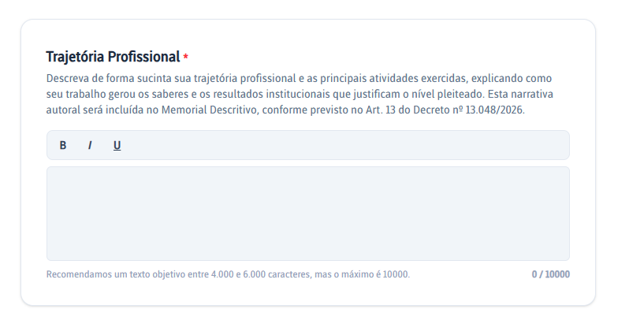

Memorial Descritivo
Apresente sua trajetória profissional e relacione cada atividade aos documentos comprobatórios.
Trajetória Profissional
No campo Trajetória Profissional, descreva sua experiência ao longo da carreira, apresentando informações que contribuam para a análise da Comissão de RSC. O Memorial deve refletir sua trajetória de forma individual, considerando as particularidades do seu cargo e da sua atuação profissional.
Quando as atividades estiverem diretamente relacionadas às atribuições do cargo, procure explicar como os saberes, as competências e as experiências desenvolvidas contribuíram para a construção de conhecimentos, o aprimoramento profissional e o desempenho das atividades ordinárias.
As informações apresentadas no Memorial devem estar respaldadas pela documentação comprobatória anexada ao processo. O Assistente recomenda um texto entre 3.000 e 6.000 caracteres, embora o campo aceite até 10.000 caracteres.
Onde inserir o texto
Para facilitar a elaboração e a revisão, sugerimos que o texto seja redigido inicialmente em um documento do Microsoft Word ou editor de texto equivalente. Depois de revisar e finalizar o conteúdo, copie-o e cole-o no campo Trajetória Profissional do Assistente RSC.

Sugestão para organizar o Memorial Descritivo
Esta é apenas uma sugestão de organização. O Memorial Descritivo deve refletir a trajetória profissional do servidor e ser elaborado de acordo com sua experiência e com a documentação apresentada.
Você pode considerar abordar aspectos como:
- Trajetória Profissional;
- Experiências;
- Competências Desenvolvidas;
- Resultados Alcançados;
- Atividades relacionadas ao Ensino, Pesquisa, Extensão e Gestão, quando aplicáveis;
- Justificativa para o nível de RSC pretendido.
Depois de gerar o documento no Assistente RSC, transforme o Memorial Descritivo em PDF para inseri-lo no processo.